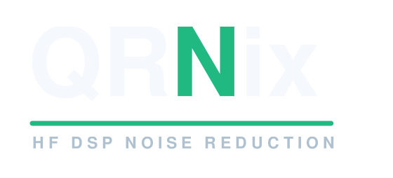
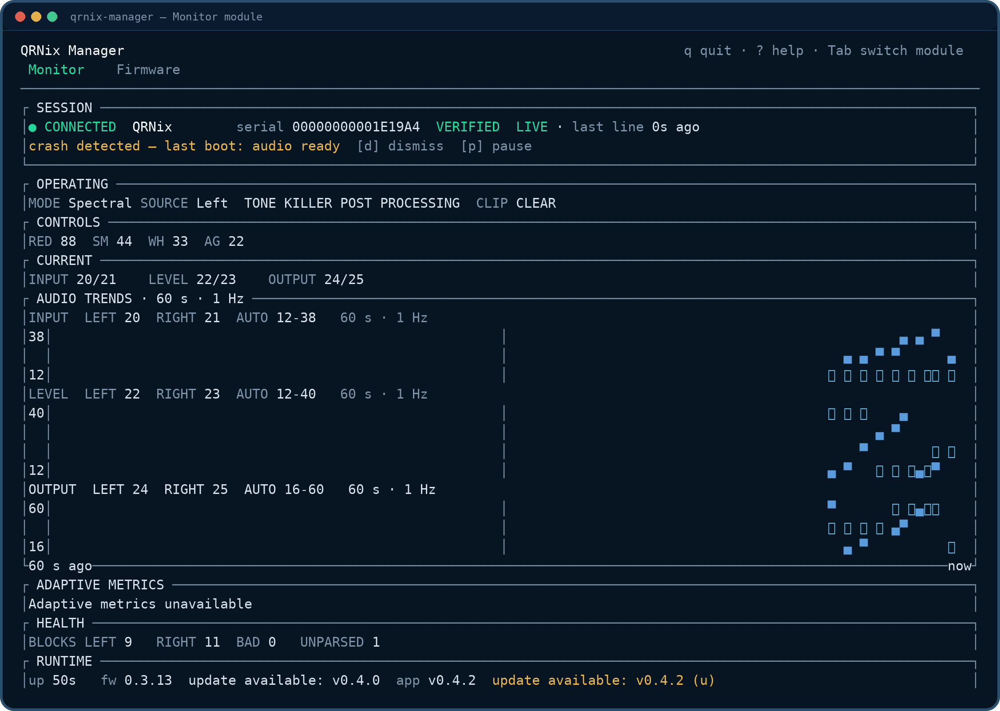
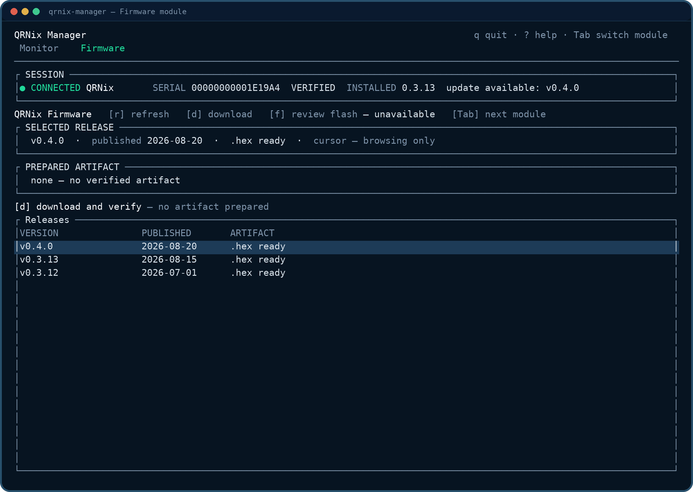
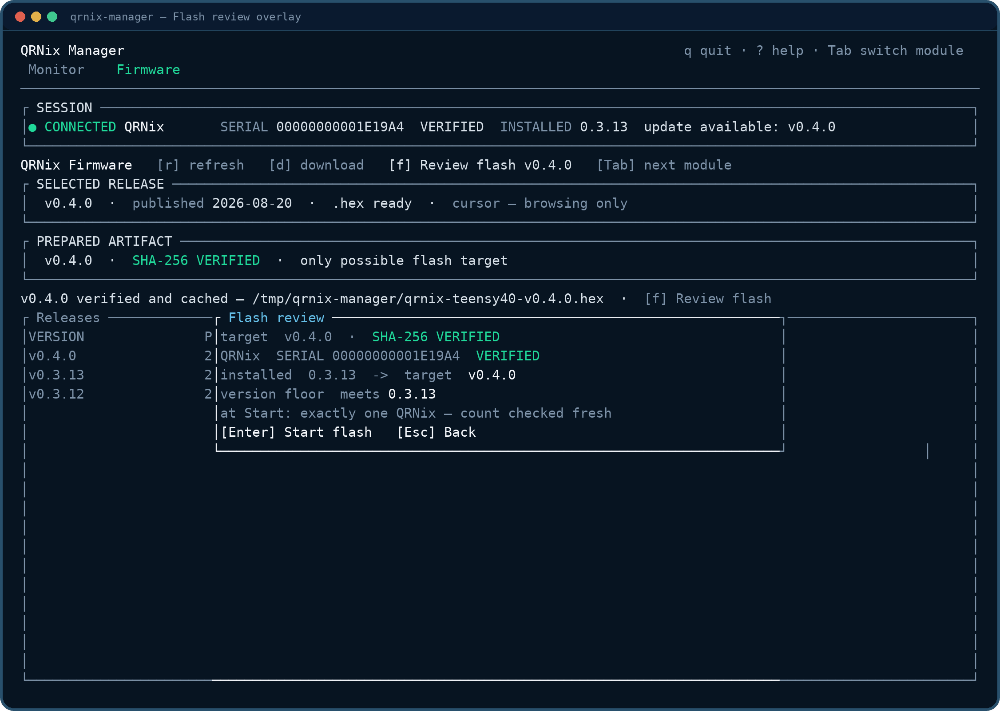
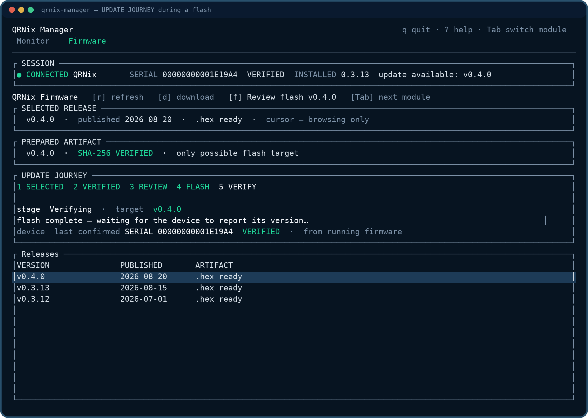

Live Signal Deck
Plots the last 60 seconds of Input, Level, and Output as paired trends, and shows the connected unit — serial, live or stale state, controls, and health — without guessing.

Companion app
QRNix Manager is a free companion app that connects to the box over USB. Watch the live signal, check the installed firmware, and update it — all from one terminal window.
What it does
QRNix Manager talks to the device over the same USB port that powers it. No cloud, no account — the link is direct.
Plots the last 60 seconds of Input, Level, and Output as paired trends, and shows the connected unit — serial, live or stale state, controls, and health — without guessing.
Compares the installed firmware against the latest release, so the box is never silently out of date.
Browses firmware releases, downloads the hex, verifies its SHA-256 digest, and flashes it through the Teensy bootloader. A bad download is never written to the device.
The Monitor
QRNix Manager auto-connects over the same USB cable that powers the box and renders the status stream — one line per second — as a live dashboard: paired signal trends, operating state, and link health, with the connected unit's identity and freshness always on screen.

Illustrative frame — the same rendering you get with the box plugged in.
Who is connected and how fresh the link is. The serial carries an explicit VERIFIED/UNVERIFIED state, and the last-line age is marked LIVE or STALE — a frozen screen is never mistaken for a live one.
A device reboot or CrashReport never scrolls past silently: the banner stays until you dismiss it with d.
The front panel in text: mode, source, Tone-kill and post-filter states, clip indication, and the four controls as compact values.
The last 60 seconds of Input, Level, and Output at the 1 Hz cadence, paired Left/Right on independent AUTO scales. p pauses the view — and marks it PAUSED — when you want to study a moment.
When the firmware reports the NR2 tail, the deck adds SNR average/min/max, band counts, gain, and mix. Without the tail it says so — it never guesses.
DSP blocks, bad blocks, and unparsed line count stay visible. The footer compares the installed firmware with the latest release — checked on connect and on r, never on a timer, so the app works fully offline.
Firmware
The Firmware module — Tab from the Monitor — replaces the old PlatformIO and bootloader-flasher workflow: browse releases, download a digest-verified hex, review what will happen, and flash, without leaving the app.

The release list — qrnix-firmware releases newest first. d downloads the selected hex; the artifact state after a verified download is shown below.

The flash review opens over the release list. Every gate below is re-checked at Start, not trusted from earlier in the session.

The five-stage journey — 1 SELECTED → 2 VERIFIED → 3 REVIEW → 4 FLASH → 5 VERIFY. The write gauge tracks the hex upload; when it completes, the QRNix reboots with the new firmware and the app waits for the device to report its version.
d. ↑/↓ selects a release, d downloads its hex on a background thread with a progress gauge. The file is SHA-256 verified against the digest GitHub publishes for it, then cached atomically — and re-verified on every reuse. A mismatch is re-downloaded, never accepted.f. f opens the flash review, which names the prepared target, the connected unit's serial with its explicit VERIFIED/UNVERIFIED state, the installed version, and the path from installed to target. The safety gates are re-checked fresh at Start: a target below wire contract v0.3.13 is refused up front — the manager could not read the device afterward — and with more than one QRNix present the flash is refused, so the wrong unit can never be written.Enter. The review's [Enter] Start flash begins the journey: the app sends a reboot request over the live USB serial link and the QRNix reboots into its bootloader — no button needed. If the bootloader never appears, the app says so and the Program button is the fallback.flashed v0.4.0 · device reports v0.4.0 — before the update is done.| Key | Action |
|---|---|
| Tab / Shift-Tab | Switch between the Monitor and Firmware modules. |
| ↑ / ↓ (or j / k) | Port picker and release selection. |
| Enter | Connect to the selected port — or confirm the flash from the review. |
| r | Re-run the firmware-version check (Monitor) or refresh the release list (Firmware). |
| d | Dismiss the crash/reboot banner (Monitor) or download/cancel a release (Firmware). |
| f | Flash: open the review for the verified artifact (Firmware). |
| p | Pause and resume the live view. |
| u | Advance the self-update flow: check, download, apply at quit. |
| c | Rescan serial ports (Monitor). |
| ? / Esc | Open and close the help overlay. |
| q | Quit. |
Self-updates follow the same discipline as firmware: u checks for a newer manager build, downloads it with a progress gauge, and applies it when you quit — the running binary is never overwritten.
Platforms
| Windows | Supported — x86_64, single executable. |
|---|---|
| Linux | Supported — x86_64, glibc 2.35 or newer, single executable. |
| macOS | In progress — Apple Silicon and Intel build exists; hardware acceptance is pending. |
First steps